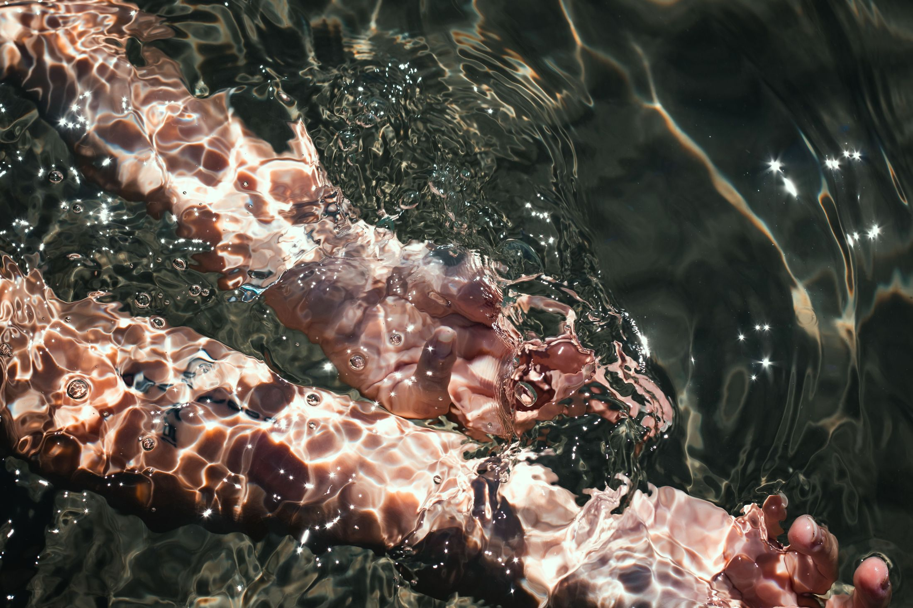
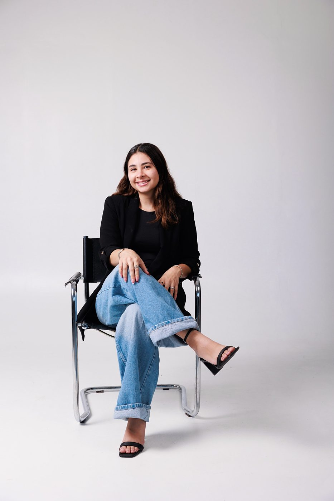
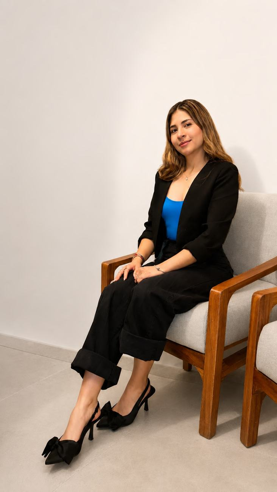
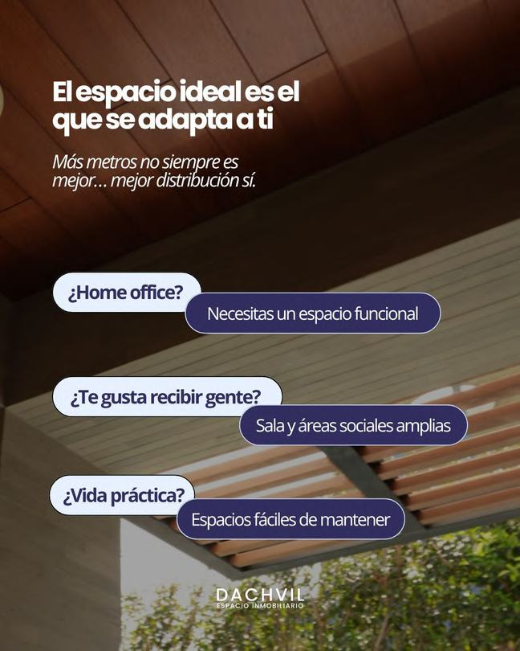
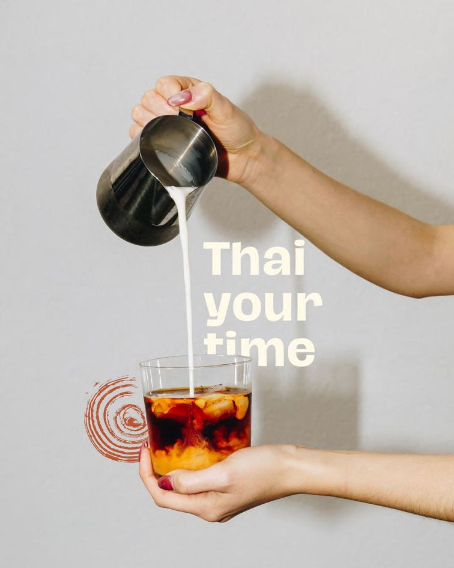
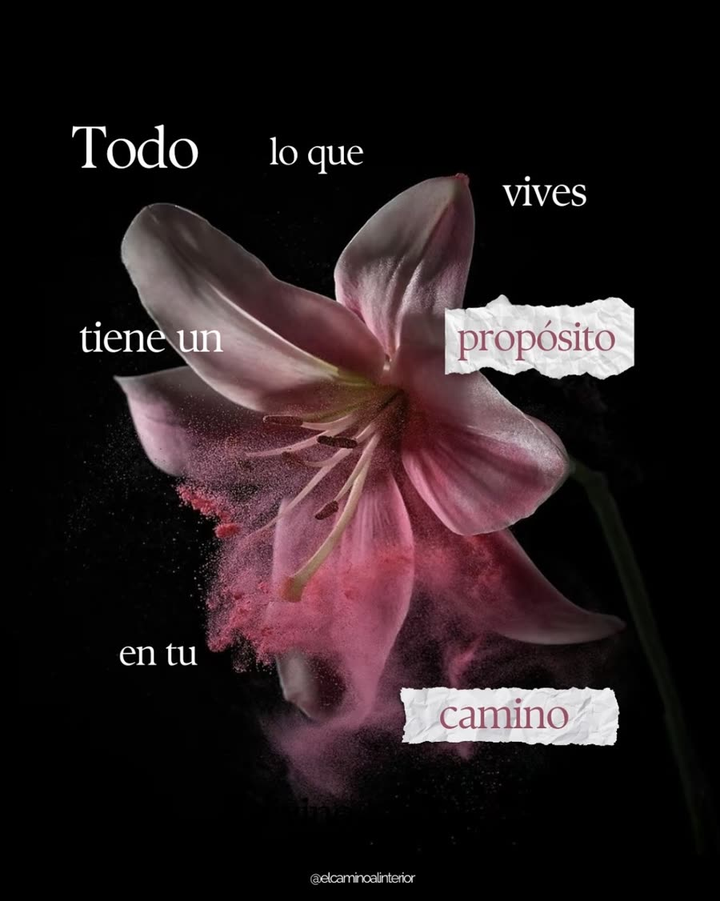
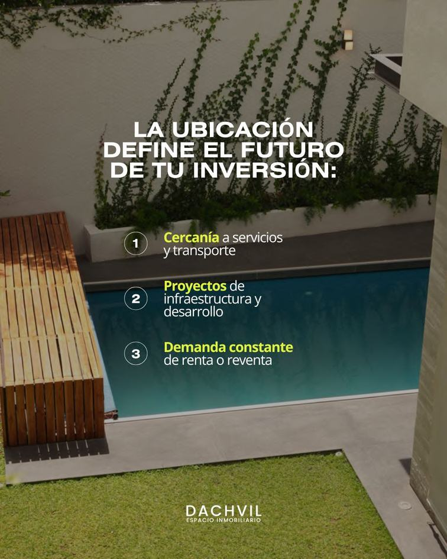
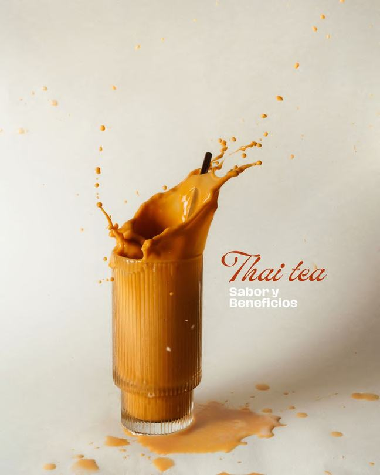
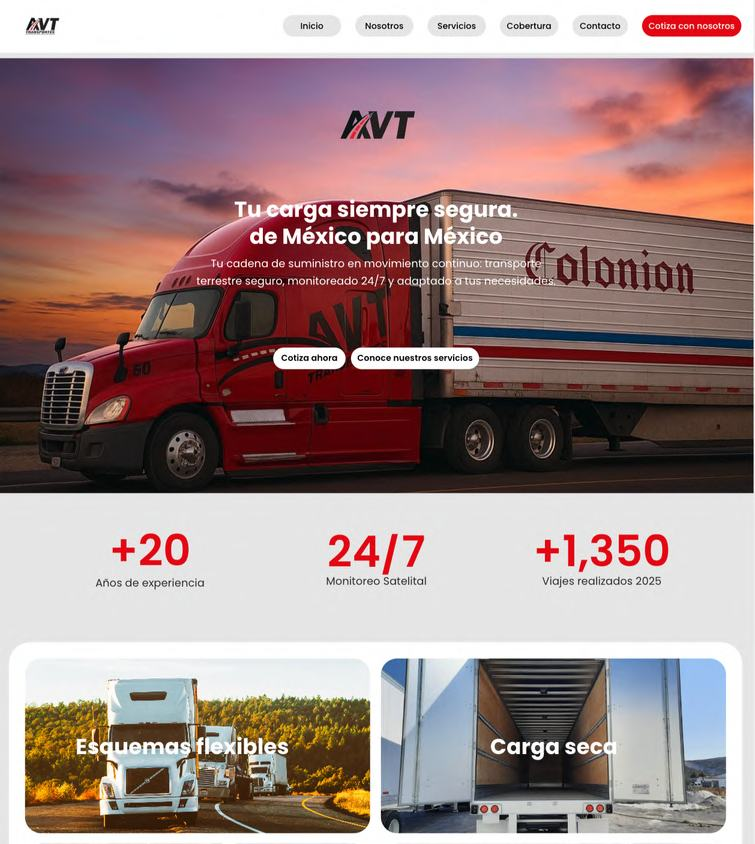

Daniela Partida
Marketing strategy& creative direction
Based in Spain
Create,connect,generate.
Marketing strategist and creative director, working in Spain, Mexico and beyond.

Daniela Partida · 2026Club Deportivo Guadalajara / Grupo Omnilife / Hotel El Dorado / El Camino al Interior / Dachvil / Innova Recovery House / Zara Loves Diamonds / Tai Nalai / AVT / Pivota
What
I do
I build the strategy and deliver the work, from the first brief to the final results.
Marketing strategy
Marketing plans with clear goals, channels and KPIs. Campaigns and Meta Ads, from targeting to performance reporting.
Brand strategy & identity
Positioning, brand architecture, visual identity, tone of voice and storytelling for new and growing brands.
Communications & PR
Stakeholder, sponsor and media relations. Clear, consistent messages for every audience, internal and external.
Copywriting
Copy that sounds like the brand: social, campaigns, websites, blogs, email and LinkedIn. In English and Spanish.
Content & creative direction
Content strategy, calendars, art direction, design and video editing, so every piece looks and sounds like one brand.
Project & event management
End-to-end delivery: planning, timelines, vendors and teams. Events for 70 to 200+ guests.
Selected
work
Six projects across sports, wellness, healthcare, real estate, luxury and food. Each one with the challenge, my role and measurable results.
Creative direction
& video
Reels I directed, shot and edited: from concept and script to the final cut.
Experience
Pivota
Content creator · real estate · remote
- Blog articles for real estate brands
- Social media content and captions
- Email campaigns and newsletters
- Performance reports: what worked, what didn't and next steps
Freelance
Marketing & brand strategy
- Brand and digital marketing strategies for hospitality, wellness, healthcare, real estate, F&B and jewelry brands
- Marketing strategy and brand architecture, including Hotel El Dorado
- Brand concepts, visual identity and storytelling for emerging brands
- Creative direction: concept, visual line and content production
- Project management for each client: planning, timelines, deliverables and reporting
- Content calendars and copywriting
- Meta Ads campaigns, from targeting to performance analysis
Club Deportivo Guadalajara
Grupo Omnilife · Hospitality, marketing & events
- Built the identity and positioning of 1906 Hospitality
- Managed relationships with clients, brands, stakeholders and players' families
- Designed and ran VIP experiences and events for 70 to 200+ people
- Social media, visual materials and strategic presentations
I create real connections between brands
and people through strategy, creativity and experiences.
Skills &
tools
Strategic
- Branding & brand development
- Brand strategy
- Digital marketing
- Public relations
- Communication strategies
- Experience design
Technical
- Canva, Adobe, Figma, Framer
- Meta Ads
- Video editing (CapCut)
- Social media management
- Creative direction
- Project management
Personal
- Creativity
- Cross-functional collaboration
- Strategic thinking
- Attention to detail
- Proactivity
- Emotional intelligence
Languages
- Spanish · native
- English · professional

Hi, I'm Dani
I am a marketing professional with experience in brand strategy, communications, public relations and digital marketing, leading projects that create meaningful connections between brands and people.
My experience spans both corporate and freelance environments, where I have managed initiatives across sports, hospitality, wellness, healthcare, real estate, food & beverage and luxury brands, from strategy and creative direction to campaign execution, stakeholder management, and content strategy & production.
I combine strategic thinking, creativity and project management to build brands, develop marketing campaigns, strengthen brand positioning, and create experiences that generate meaningful business impact.
Content
design
Real pieces I designed for clients: social, print and web.






Kind
words
Testimonials pending.
[Testimonial from Dachvil]
[Testimonial from Innova Recovery House]
[Testimonial from a Chivas manager]